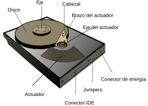
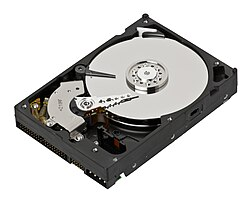
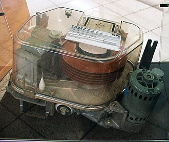
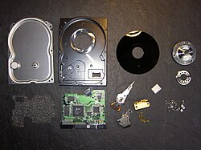
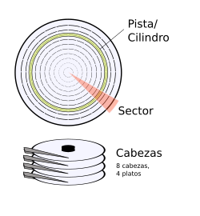
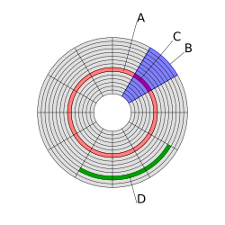
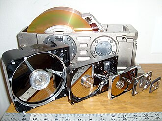
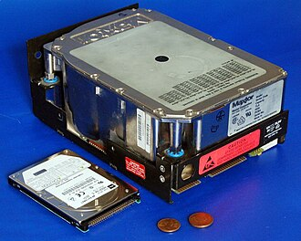

Unidad de disco duro

El primer disco duro fue inventado por IBM, en 1956.5 A lo largo de los años, han disminuido los precios de los discos duros, al mismo tiempo que han multiplicado su capacidad, siendo la principal opción de almacenamiento secundario para computadoras personales, desde su aparición en los años 1960.6 Los discos duros han mantenido su posición dominante gracias a los constantes incrementos en la densidad de grabación, que se ha mantenido a la par de las necesidades de almacenamiento secundario.6
Mejorados continuamente, los discos rígidos han mantenido esta posición en la era moderna de los servidores y las computadoras personales. Más de 224 compañías han fabricado unidades de disco duro históricamente, aunque después de una extensa consolidación de la industria, la mayoría de las unidades son fabricadas por Seagate, Toshiba y Western Digital. Los discos duros dominan el volumen de almacenamiento producido (exabytes por año) para servidores. Aunque la producción está creciendo lentamente, los ingresos por ventas y los envíos de unidades están disminuyendo debido a que las unidades de estado sólido (SSD) tienen mayores tasas de transferencia de datos, mayor densidad de almacenamiento de área, mejor confiabilidad,7 y tiempos de acceso y latencia mucho más bajos.8 9 10 11

Los tamaños también han variado mucho, desde los primeros discos IBM hasta los formatos estandarizados actualmente: 3,5 pulgadas para PC y servidores, y 2,5 pulgadas para dispositivos portátiles(LAPTOPS, NOTEBOOK). Todos se comunican con la computadora a través del controlador de disco, empleando una interfaz estandarizada. Los más comunes hasta los años 2000 han sido IDE (also llamado ATA o PATA), SCSI/SAS (generalmente usado en servidores y estaciones de trabajo). Desde el 2000 en adelante ha ido masificándose el uso de los SATA. Existe además los discos de canal de fibra (FC), empleados exclusivamente en servidores. Las unidades externas se conectan principalmente por USB.
Para poder utilizar un disco duro, un sistema operativo debe aplicar un formato de bajo nivel que defina una o más particiones. La operación de formateo requiere el uso de una fracción del espacio disponible en el disco, que dependerá del sistema de archivos o formato empleado. Además, los fabricantes de discos duros, unidades de estado sólido y tarjetas flash miden la capacidad de los mismos usando prefijos del Sistema Internacional, que emplean múltiplos de potencias de 1000 según la normativa IEC e IEEE, en lugar de los prefijos binarios, que emplean múltiplos de potencias de 1024, y son los usados por sistemas operativos de Microsoft. Esto provoca que en algunos sistemas operativos sea representado como múltiplos 1024 o como 1000, y por tanto existan confusiones, por ejemplo, un disco duro de 500 GB, en algunos sistemas operativos será representado como 465 GiB (es decir gibibytes; 1 GiB = 1024 MiB) y en otros como 500 GB.
El rendimiento de un disco duro se especifica por el tiempo requerido para mover las cabezas a una pista o cilindro (tiempo de acceso promedio) agregando el tiempo que toma para que el sector deseado se mueva debajo de la cabeza (latencia media, que es una función de la velocidad de rotación física en las revoluciones por minuto) y, finalmente, la velocidad a la que se transmiten los datos (velocidad de datos).
Existen diferentes tipos de discos duros, como los discos duros internos y los discos duros externos. Los discos duros internos son aquellos que se instalan dentro de la computadora y son utilizados para almacenar el sistema operativo, archivos y programas. Por otro lado, los discos duros externos son dispositivos portátiles que se conectan a la computadora a través de un cable y se utilizan para almacenar y transferir datos de manera externa.13
Además, es importante mencionar que existen diferencias entre los discos duros (HDD) y las unidades de estado solido (SSD). Los discos duros utilizan piezas mecánicas y el magnetismo para grabar y leer datos, mientras que las unidades de estado solido utilizan memoria flash para almacenar datos de forma electrónica. Las unidades de estado solido suelen ser más rápidas y tener menos latencia, pero tienen un tiempo de vida reducido a comparación de los discos duros, y también suelen ser más costosas que los discos duros.13
Historia

El primer disco duro, aparecido en 1956, fue el Ramac I, presentado con la computadora IBM 350: pesaba una tonelada y su capacidad era de 5 MB. Más grande que un frigorífico actual, este disco duro trabajaba todavía con válvulas de vacío y requería una consola separada para su manejo.
Su gran mérito consistía en que el tiempo requerido para el acceso era relativamente constante entre algunas posiciones de memoria. Este tipo de acceso se conoce como acceso aleatorio. En cambio, en las cintas magnéticas era necesario enrollar y desenrollar los carretes hasta encontrar el dato buscado, teniendo tiempos de acceso muy dispares para cada posición. Este tipo de acceso se conoce como acceso secuencial.
La tecnología inicial aplicada a los discos duros era relativamente simple. Consistía en recubrir con material magnético un disco de metal que era formateado en pistas concéntricas, que luego eran divididas en sectores. El cabezal magnético codificaba información al magnetizar diminutas secciones del disco duro, empleando un código binario de «ceros» y «unos». Los bits o dígitos binarios así grabados pueden permanecer intactos durante años. Originalmente, cada bit tenía una disposición horizontal en la superficie magnética del disco, pero luego se descubrió cómo registrar la información de una manera más compacta.
El mérito del francés Albert Fert y al alemán Peter Grünberg (ambos premio Nobel de Física por sus contribuciones en el campo del almacenamiento magnético) fue el descubrimiento del fenómeno conocido como magnetorresistencia gigante, que permitió construir cabezales de lectura y grabación más sensibles, y compactar más los bits en la superficie del disco duro. De estos descubrimientos, realizados en forma independiente por estos investigadores, se desprendió un crecimiento espectacular en la capacidad de almacenamiento en los discos duros, que se elevó un 60 % anual en la década de 1990.
En 1992 los discos duros de 3,5 pulgadas alojaban 250 MB, mientras que 10 años después habían superado 40 GB (40 960 MB). A la fecha (2024), ya se dispone de en el uso cotidiano con discos rígidos de más de 50 TB, esto es, 51200 GB (52 428 800MB).
En 2005 los primeros teléfonos móviles que incluían discos duros fueron presentados por Samsung y Nokia, aunque no tuvieron mucho éxito ya que las memorias flash los acabaron desplazando, debido al aumento de capacidad, mayor resistencia y menor consumo de energía.
Véase también: Primeros discos IBM
Estructura lógica
Dentro del disco se encuentran:
Estructura física

Cada plato posee dos “ojos”, y es necesaria una cabeza de lectura/escritura para cada cara. Si se observa el esquema Cilindro-Cabeza-Sector, a primera vista se ven 4 brazos, uno para cada plato. En realidad, cada uno de los brazos es doble, y contiene dos cabezas: una para leer la cara superior del plato, y otra para leer la cara inferior. Por tanto, hay ocho cabezas para leer cuatro platos, aunque por cuestiones comerciales, no siempre se usan todas las caras de los discos y existen discos duros con un número impar de cabezas, o con cabezas deshabilitadas. Los cabezales de lectura/escritura no tocan el disco, sino que pasan muy cerca (hasta a 3 nanómetros), debido a una finísima película de aire que se forma entre los cabezales y los platos cuando los discos giran (algunos discos incluyen un sistema que impide que los cabezales pasen por encima de los platos hasta que alcancen una velocidad de giro que garantice la formación de esta película). Si alguna de las cabezas llega a tocar una superficie de un plato, causaría muchos daños en él, rayándolo gravemente, debido a lo rápido que giran los platos (uno de 7200 revoluciones por minuto se mueve a 129 km/h en el borde de un disco de 3,5 pulgadas).
Direccionamiento

Hay varios conceptos para referirse a zonas del disco:

Factor de forma
Artículo principal: Lista de factores de forma de unidades de disco
La primera unidad de disco duro de IBM, la IBM 350, usaba una pila de cincuenta platos de 24 pulgadas, almacenaba 3,75 MB de datos (aproximadamente el tamaño de una imagen digital moderna) y tenía un tamaño comparable a dos refrigeradores grandes. En 1962, IBM presentó el IBM 1311, que usaba seis platos de 14 pulgadas (tamaño nominal) en un paquete extraíble y era aproximadamente del tamaño de una lavadora. Este se convirtió en un tamaño de plato estándar durante muchos años, utilizado también por otros fabricantes.16 El IBM 2314 usó platos del mismo tamaño en un paquete e introdujo el diseño de "unidad en un cajón". a veces llamado el "horno de pizza", aunque el "cajón" no era la unidad completa. En la década de 1970, los discos duros se ofrecían en gabinetes independientes de diferentes dimensiones que contenían de uno a cuatro discos duros.

Con el aumento de las ventas de microcomputadoras que tienen disqueteras integradas (FDD), los HDD que encajaran en los montajes de FDD se volvieron deseables. Comenzando con el Shugart Associates SA1000, los factores de forma de HDD inicialmente siguieron a los de las unidades de disquete de 8 pulgadas, 5¼ pulgadas y 3½ pulgadas. Aunque se hace referencia a estos tamaños nominales, los tamaños reales de esas tres unidades respectivamente son 9,5", 5,75" y 4" de ancho. Debido a que no había unidades de disquete más pequeñas, los factores de forma de HDD más pequeños, como las unidades de 2½ pulgadas (en realidad, 2,75" ancho) se desarrollaron a partir de ofertas de productos o estándares de la industria.
El más temprano "factor de forma" de los discos duros, heredó sus dimensiones de las disqueteras. Pueden ser montados en los mismos chasis y así los discos duros con factor de forma, pasaron a llamarse coloquialmente tipos FDD floppy-disk drives (en inglés). Los factores usado actualmente son el de 3,5 pulgadas para torres, sobremesas, NAS y servidores, y el de 2,5 pulgadas para portátiles y equipos con factores cada vez más pequeño como los Intel NUC. En los SDD es este formato el que se ha impuesto cuando se sustituye una unidad HDD por una SDD, pero en los nuevos equipos se van imponiendo formatos que nada tienen que ver con los de la disquetera.

A partir de 2019 los discos duros de 2½ pulgadas y 3½ pulgadas son los tamaños más populares. En 2009 todos los fabricantes habían interrumpido el desarrollo de nuevos productos para los factores de forma de 1,3 pulgadas, 1 pulgada y 0,85 pulgadas debido a la caída de los precios de la memoria flash,18 19 que no tiene partes móviles, aunque Samsung introdujo en el 2008 con el SpidPoint A1 otra unidad de 1,3 pulgadas. Mientras que los tamaños nominales están en pulgadas, las dimensiones reales se especifican en milímetros.
El nombre de «pulgada» para los factores de forma normalmente no identifica ningún producto actual (son especificadas en milímetros para los factores de forma más recientes), pero estos indican el tamaño relativo del disco, para interés de la continuidad histórica.